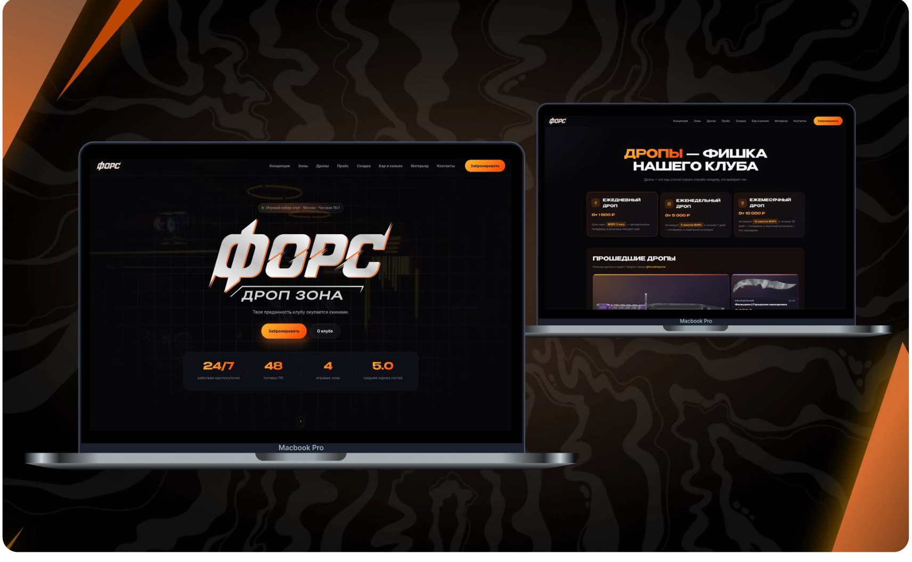
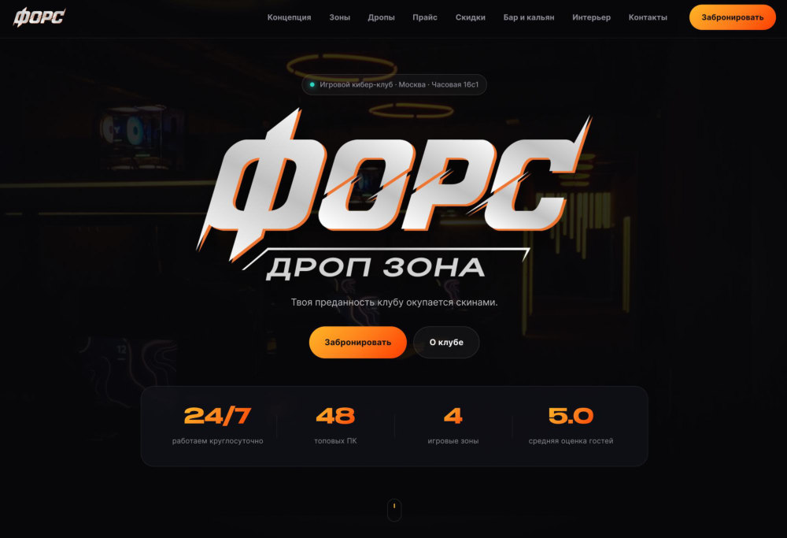
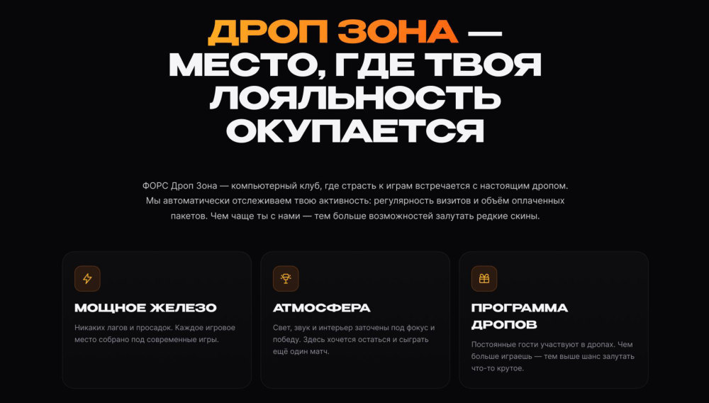
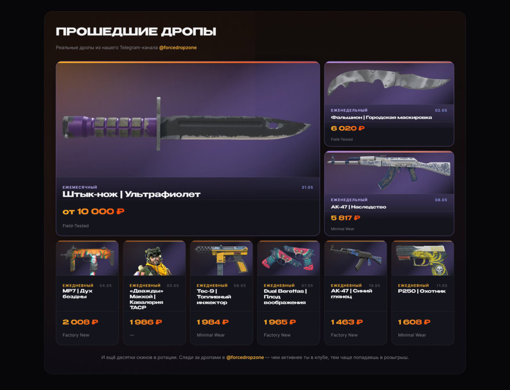
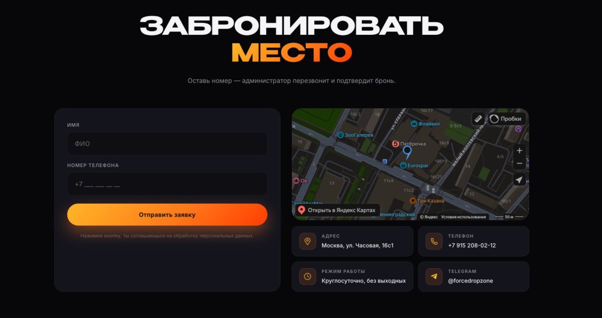
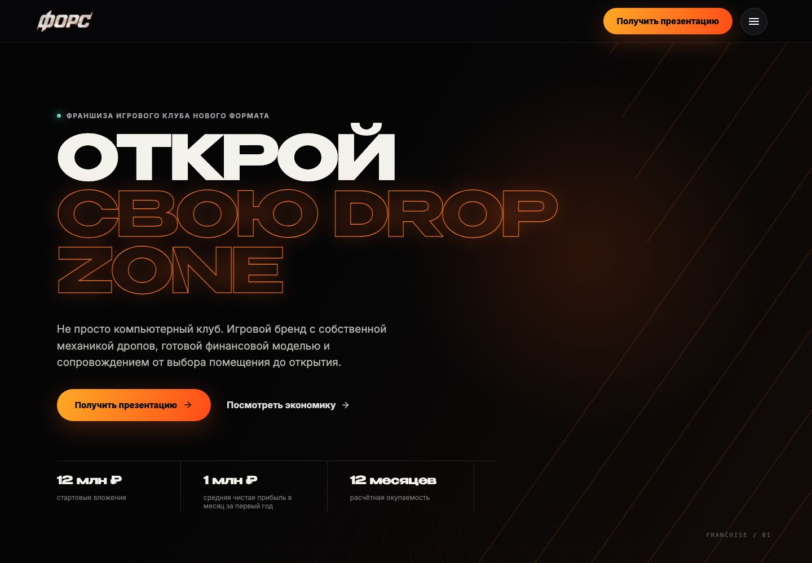
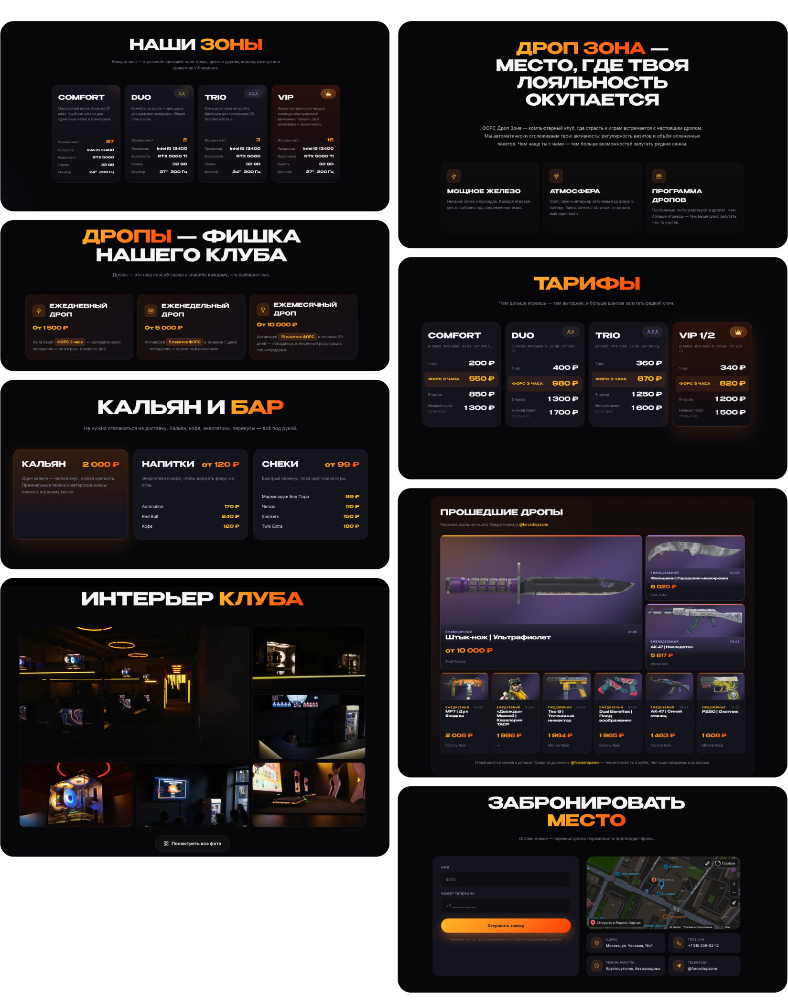

01
Позиционирование
Первый экран сразу объясняет, что FORCE — это готовый игровой бренд, а не просто помещение с компьютерами.

(1)
Пользователь не сразу понимает, как работают дропы и можно ли им доверять. Информация разрознена, история прошлых дропов не собрана в одном месте — из-за этого снижается доверие и желание участвовать.
(2)
Я собрал игровой лендинг, который по шагам объясняет механику ежедневных дропов, показывает реальные результаты и ведёт пользователя к простой заявке, подключённой к Telegram.
(3)
Тёмный игровой интерфейс поддерживает эстетику CS2 и сразу связывает сайт с аудиторией клуба.
Понятная иерархия объясняет механику дропов по шагам и снижает порог входа для нового пользователя.
История прошлых дропов работает как доказательство и помогает сформировать доверие к бренду.

(4)
Пространство, где пользователь сразу понимает механику дропов и может уверенно участвовать без лишних вопросов.

(5)
Отдельный блок с прошедшими розыгрышами помогает проверить подлинность механики и показывает реальные результаты. Так прозрачность превращается в дополнительный повод участвовать.

(7)
Простая форма заявки связана с Telegram Bot API: пользователь оставляет данные и сразу попадает в рабочий сценарий клуба. Чем короче путь, тем проще присоединиться к дропу.

(8)
Развитие проекта / франшиза
Следующим этапом я быстро собрал отдельную B2B-страницу для будущих партнёров. Здесь бренд FORCE уже говорит не с гостем клуба, а с человеком, который рассматривает открытие площадки в своём городе: объясняет формат, показывает экономику и ведёт к заявке на презентацию.

(9)
Как собран раздел
Я сохранил тёмную айдентику клуба, но перевёл подачу в более собранный и деловой B2B-сценарий. Дизайн и вёрстку собрал в короткий срок, чтобы команда могла сразу показать рабочую модель партнёрам и проверить спрос.
01
Первый экран сразу объясняет, что FORCE — это готовый игровой бренд, а не просто помещение с компьютерами.
02
Ключевые цифры вынесены в отдельный блок: инвестиции, выручка, прибыль и расчётная окупаемость считываются за несколько секунд.
03
Фото клуба, игровые зоны и механика дропов доказывают, что у франшизы есть живая площадка и понятный продукт.
04
В конце страницы остаётся один понятный шаг — запросить презентацию и получить расчёт под свой город.
(10)
Развитие проекта / доставка заявок
После запуска я решил проблему с отправкой заявок у пользователей из России без VPN: настроил два моста для передачи данных из форм в Telegram. Теперь запросы на бронирование и франшизу доходят до нужных ботов без дополнительных действий со стороны посетителя.
